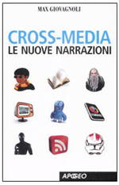

|
 Segnala
ad un amico
| Condividi su Segnala
ad un amico
| Condividi su


 |
Commenti
|
Commenti

Generazione X Media
Oggi ognuno di noi può essere autore e consumatore di nuovi linguaggi, contenuti ed immaginari, che trovano espressione su più media contemporaneamente. Come dimostra il fenomeno LOST, una ri-scrittura e condivisione collettiva da parte di un pubblico sempre più interattivo e in grado di influenzare le scelte strategiche con i brand. L'intervista di Eccellere a Max Giovagnoli.
di
Elisa Scarcella
Fanfiction, fanmovies, brand-stories, adbusting, blog-narratives e pods: queste sono le nuove forme di narrazione “user-determined narrative”, narrazioni a carattere partecipativo, più fidelizzate e mirate rispetto a quelle tradizionali, frutto di una evoluzione ed emancipazione sociale che trova espressione su più mezzi di comunicazione contemporaneamente.
Questo è il mondo della “Generazione X-Media” (cross-media), una generazione di persone emancipate dal punto di vista culturale, tecnologico e narrativo, che si cimentano in una spontanea opera di ri-definizione e ri-mediazione dei contenuti offerti attraverso i canali tradizionali, producendo nuovi linguaggi, contenuti ed immaginari che trovano forma su più media simultaneamente. Un’operazione di contaminazione e ri-scrittura collettiva di narrazioni da parte di nicchie iperattive accomunate da specifiche passioni per prodotti, film, serie tv (pensiamo alla dilagante mania per LOST e alle iniziative promosse dalla community dei suoi fans in tutto il mondo come Lostpedia) e personaggi; in ogni nicchia i contributi narrativi individuali contribuiscono a costruire l’immaginario collettivo.
Per comprendere meglio questo fenomeno in continua evoluzione, Eccellere ha intervistato Max Giovagnoli, autore del libro “Cross-media: le nuove narrazioni”, edito da Apogeo. Giovagnoli è media consultant per major cinematografiche e broadcaster televisivi e online e dirige il primo corso di laurea italiano in Cross-media Communication al Link-Campus di Roma.
Vorrei innanzitutto chiederle perché a Suo parere oggi il pubblico non trova più sufficienti e stimolanti le narrazioni tradizionali?
Perché sono cambiati i tempi dei consumi di storie, che oggi sono più brevi, più ripetute e contaminate tra loro. Le persone oggi hanno bisogno di qualcosa in più dal punto di vista emotivo e partecipativo; vogliono un'interattività che permetta loro di esprimere la propria opinione. Si arriva così ad una narrazione “di secondo grado”, caratterizzata da appropriazione e condivisione alternativa della narrazione, dalla contaminazione tra più linguaggi e dalla letteratura fluida.
Tra i vari mezzi di comunicazione tradizionali, la tv sembra aver trovato un canale privilegiato di interattività con il pubblico, specialmente attraverso il web, fino a casi limite di alcune serie tv che determinano la loro trama o durata a seconda delle reazioni dei fans...
Oggi il pubblico chiede storie che abbiano le caratteristiche della complessità e della modificabilità, che permettano una effettiva possibilità di azione. Da parte loro, le serie tv non possono che avere giovamento da questa interattività di conversazione con l'audience, fondata sul confronto e sulla partecipazione e sulla presenza di forme di espressione diverse contemporaneamente. Con la creazione delle fanfiction è nata la narrazione partecipativa gestita direttamente da fan dei principali brand mondiali dell'entertainment. Un processo già avviato con le reality narratives (ad es. Big Brother) che permettono agli spettatori di influenzare il racconto in modo interattivo, online o con il telefono cellulare, ad esempio con il sistema del voto o di selezione dei personaggi.
Come sono cambiati i ruoli dell'autore/narratore, del lettore/spettatore e che forma ha assunto il loro rapporto?
Con le narrazioni cross-mediali gli autori si assumono una nuova responsabilità: devono infatti ideare prodotti ad hoc per mezzi di comunicazione diversi e per pubblici diversi. Questo processo, nel complesso, implica anche un aumento dei costi ed un nuovo modo di trattare la complessa questione inerente il diritto d'autore. Da parte del pubblico, si registra un nuovo tipo di consumo, che è oggi, come dicevamo, fortemente attivo. Autori e destinatari delle nuove narrazioni sono dunque vicini oggi più che mai, tanto da vedere sempre più diffuse forme di collaborative autorship. C'è dunque bisogno di una nuova forma di alfabetizzazione mirata alla creazione di progetti editoriali e di narrazioni che prevedano l'uso, la partecipazione e la contaminazione di più linguaggi, di più immaginari e di diversi mezzi e tecnologie di comunicazione simultaneamente.
L'identità autoriale passa da 1 a tutti/nessuno, mentre il pubblico arriva a ri-scrivere le storie: questo non stravolge il ruolo dell'autore e l'originalità dell'opera, nei suoi contenuti, intenti e significati?
Le nuove arene narrative globali hanno portato ad un'inevitabile devoluzione di identità ed autorialità da parte degli stessi narratori. L'immaginario collettivo, il digital storytelling e la comunicazione emozionale permettono all'autore originario di avere nuovi pubblici. Pensiamo ad es. al film Guerre Stellari, uscito nel 1976, che inaugurò il mercato cross-mediale del racconto multiplatform gestito da un'unica corporate e basato su un unico brand. Oggi persone che all'epoca non erano ancora nate creano e condividono storie sviluppando trame e personaggi anche secondari del film, dando così vita a prodotti nuovi ma pure sempre legati al film originale ed estendendo così la platea dei fans. Un fenomeno che può solo esser gradito all'autore del prodotto originario. Senza questi prodotti contaminati tutto si fermerebbe, in questo caso, al 1976.
Quali idee, progetti, prodotti possono essere veicolati su piattaforme convergenti e quali invece le caratteristiche che devono avere per diventare cross-mediali?
Per essere veicolati su piattaforme convergenti, non hanno bisogno di caratteristiche particolari. Infatti, i prodotti in questo caso verranno ripetuti su mezzi e canali di comunicazione diversi, senza modificarne i contenuti. Invece, per essere cross-mediali, i contenuti devono essere interattivi, prevedere passaggi virtuosi e “rimbalzi” tra un mezzo e l'altro, devono avere un bacino immaginativo forte ed una durata precisa. Ad es. nel caso di un concorso, bisogna definire prima che durerà 3 mesi e in base a quello pianificarne la presenza e comunicazione cross-mediale. Dunque, che siano prodotti di natura amatoriale o industriale, opere artistiche per l'informazione o la fiction, le nuove narrazioni devono essere capaci di segnare spazi di affinità determinanti tra i diversi mezzi di comunicazione. In questo modo la narrazione contemporanea diventa cross-mediale.
La generazione X-Media è costituita ad esempio da persone che emulano nella vita reale i personaggi dei cartoon, assumendone anche l'aspetto, persone che riproducono i personaggi delle serie televisive preferite..Finzione e realtà sembrano porsi come un unicuum...
Incarnare un personaggio, come fanno i cosplayer che “cartoonizzano” se stessi emulando i protagonisti delle serie animate più diffuse sul pianeta, di fatto è porsi come un altro medium. Queste nicchie fidelizzate che negli anni 80 erano visti come nerd e a-sociali, oggi hanno un loro ruolo all'interno del tessuto sociale giovanile e sono spesso contattati dai coetanei, grazie soprattutto alle notevoli conoscenze delle nuove tecnologie. Si tratta di una generazione difficile da amalgamare e molto eterogenea, costituita da persone molto diverse anche culturalmente ma accomunate dalla passione per le stesse tecnologie, piattaforme e modalità di fruizione di storie. Questi ragazzi poi comunicano via web ma creano occasioni di incontro anche nella vita reale.
Vorrei farle una domanda a proposito di Second Life. Abbiamo assistito ad una progressiva ritirata da parte di molto brand, mentre la presenza individuale sembra permanere. Cosa vede nel futuro di S.L.?
L'arco di sviluppo di Second Life senz'altro c'è già stato e ora il fenomeno si sta stabilizzando. Confermo che i brand si stanno ritirando, però molti rimangono perché hanno capito che le potenzialità offerte dalla presenza su S.L. sono in termini di visibilità, non di incremento di vendite. Credo che S.L. possa ora assumere un ruolo importante sul piano educational e sperimentale. Penso a corsi di formazione o a studenti di corsi in laurea in cinema che possono produrre corti con avatar come protagonista oppure autori che scelgono di elaborare le loro presentazioni in questa forma, abbandonando il formato PDF.
Che ruolo gioca oggi il marketing/advertising nelle narrazioni cross-mediali?
Advertising, comunicazione e marketing ricorrono largamente a narrazioni cross-mediali, sfruttando e approfondendo la dimensione interattiva e affabulativa del racconto. Pensiamo ad es. al lancio italiano del film “Indiana Jones e il Regno del Teschio di Cristallo” che, nel 2008, ha visto l'attivazione di una miriade di azioni ed iniziative: sito internet dedicato con approfondimenti su aspetti specifici del film, contest a premi, focus, backstage, giochi, contenuti digitali da scaricare, “Indy magazine” in distribuzione nelle sale cinematografiche, videogames, libri, figurine, giocattoli e addirittura gelati. Un contesto in cui dinamiche editoriali e strategie commerciali hanno lavorato insieme per la promozione di un brand, creando storie e racconti in grado di collettivizzare e mettere a sistema autori e consumatori intorno a quel brand e personalizzandone il consumo. Teniamo però conto che queste azioni spingono anche al verificarsi di fenomeni di aggregazione difensiva, cioè alla ricerca di spazi espressivi trasversali come communities online, forum, web-arenas e blog.
Nel suo libro, Lei parla di narrazioni corporate, ideate e gestite direttamente da aziende produttrici di contenuti, e narrazioni grassroots, ideate e gestite autonomamente dagli utenti. Quanto è chiara la linea di demarcazione tra queste due forme di narrazione?
Oggi da parte soprattutto delle majors esiste ancora un atteggiamento di alta diffidenza per i contenuti grassroots. In particolare, più i contenuti sono spinti, meno sono sorvegliati. Capita spesso però che siano le stesse majors, ad es. nel caso sia creata una sit-com su un certo brand, prima a respingere questi prodotti e poi, in un secondo momento, a contattare l'autore come collaboratore ad es. per testare nuovi prodotti. E questo costituisce un circolo vizioso. In realtà si tratta di un circolo virtuoso: questi nuovi prodotti non sono una killer application dei prodotti originari ma una forma nuova di narrazione legata a quel brand. Un concetto che il mondo “corporate” dovrebbe capire.
Tra tutte quelle che hai citato nel suo libro, quali a suo parere sono oggi le forme più interessanti e innovative di narrazioni cross-mediali?
Queste narrazioni sono talmente camaleontiche da cambiare forma, colore, modalità di espressione, in un processo in continua evoluzione. Alcune muoiono, scompaiono e altre sopravvivono e vengono potenziate. Penso che un nuovo sviluppo potranno avere in particolare i prodotti per mobile e game. Per quanto riguarda il medium televisivo invece, oggi assistiamo alla frammentazione e moltiplicazione delle televisioni ma non ad una vera interazione col pubblico, e mi riferisco specialmente al digitale terrestre, che, di fatto, si limita ad un'interazione nella consultazione.
|
Cross Media.
Le nuove narrazioni
di Max Giovagnoli
pp. 256
Apogeo
Anno 2009
EAN 9788850327331
|
2-4-2009
Contenuti concessi sotto Licenza Creative Commons Attribuzione - Non commerciale 3.0 Unported
Sostieni Eccellere con una donazione

Commenti
|

|
|
Loading...

|
|
ANNUNCI DI LAVORO
CORRELATI |
|
Loading...
|
|
|